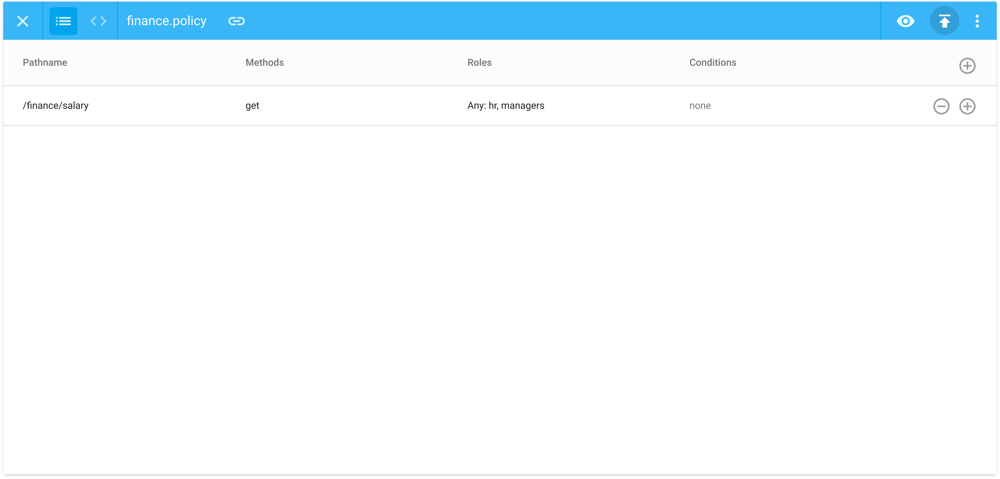

WORK
PHOTOGRAPHY
ABOUT
Styra
Authorization for enterprise stack
Targeted User
Security Engineer
Ensure internal devs have the permissions they have, when they need them.
"My job is to protect company data!"
Problems of current policy system
Scalability of policy in code
- Internal developers have a hard time to collaborate in code.
- Security engineer has a hard time to manage code-based system.
Solution
GUI based policy authoring
- Internal developers can understand existing policy at a glance
- Internal developers can write policy without code
- Security engineer can easily manage role-based policy system
User study key findings for design direction 1
Flow chart
- Flow chart adds extra learning curve.
- Once flow chart becomes complex, user tends to go back to code.
- Flow chart introduces implementation complexity.
Why design direction 2
Table
- No learning curve.
- Constrained role-based logic.
- Cheaper implementation cost.

Problems of current policy system
Visibility
- Security engineer has a hard time to understand current permissions
- Security engineer has no way to manage permissions
Solution
Policy analysis tool
- Security engineer can understand each role's permissions
- Security engineer can manage role-based system by analyzing user's usage of their permissions
Design process step 1
Prototype with real data
Align the team and scope the project
Design process step 2
First iteration
Customer feedback: concept is good, but doesn't match enterprise scale
Design process step 3
Second iteration
Restructure the information architecture to match enterprise scale